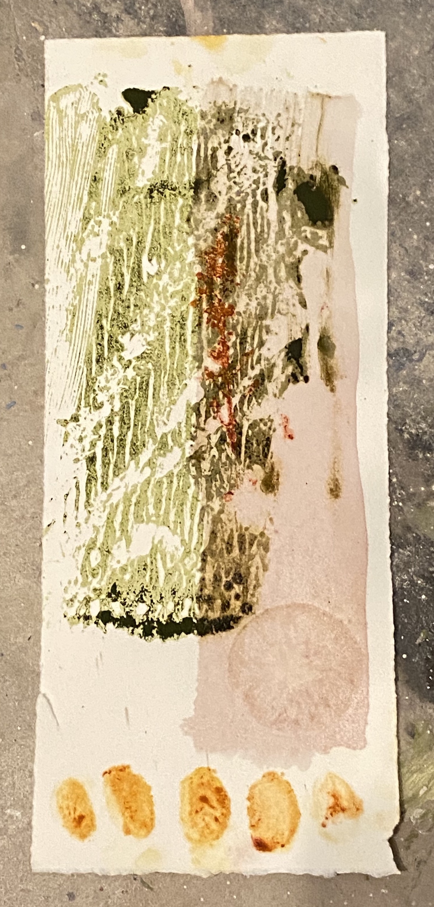
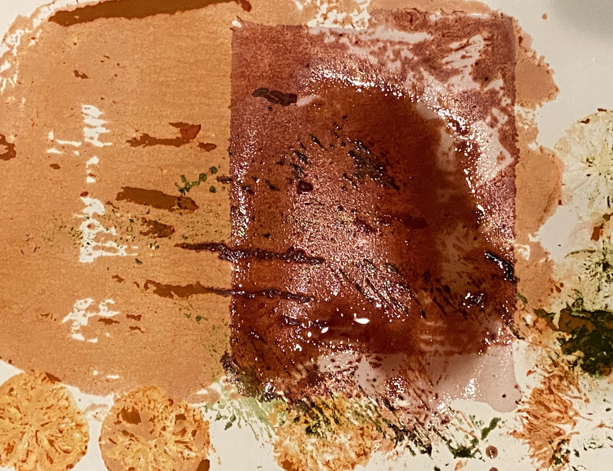
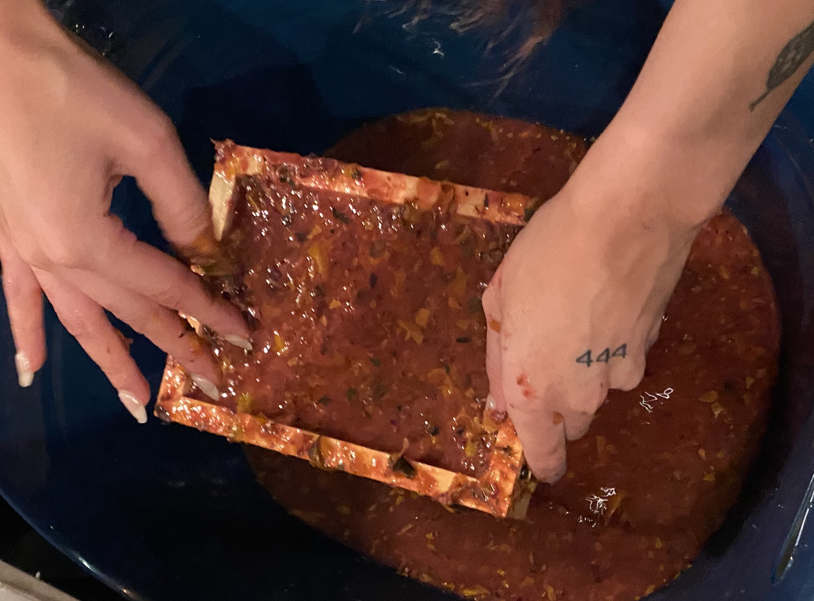
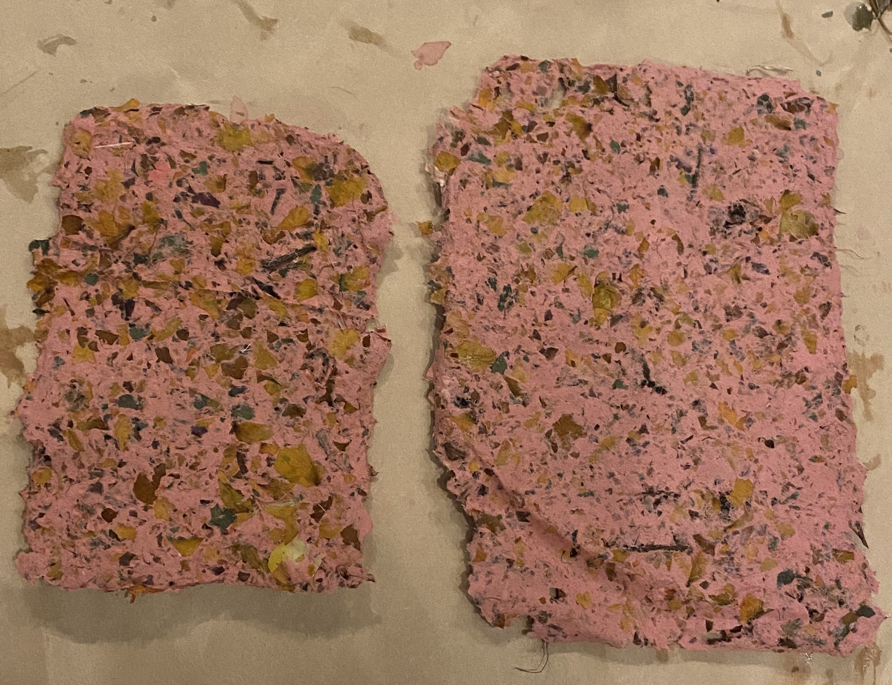
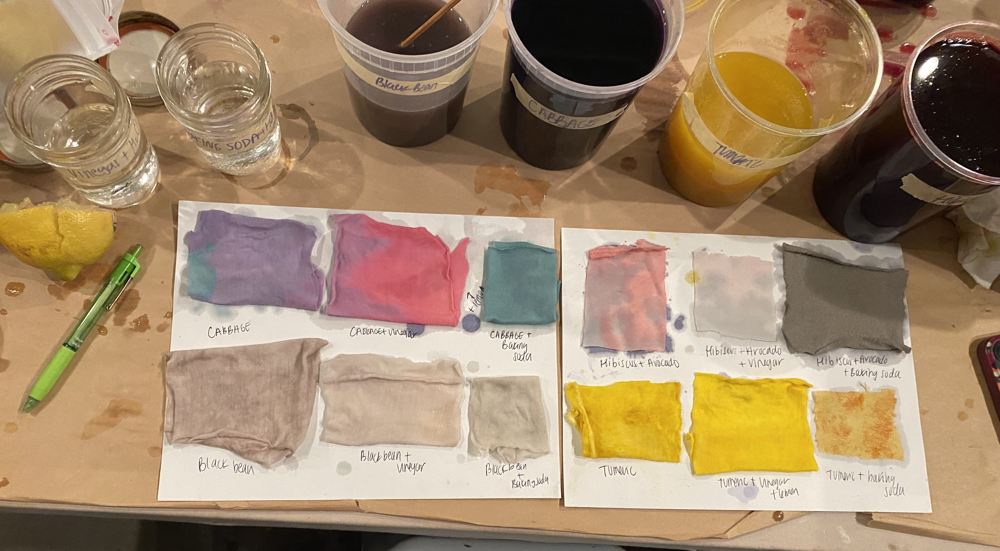
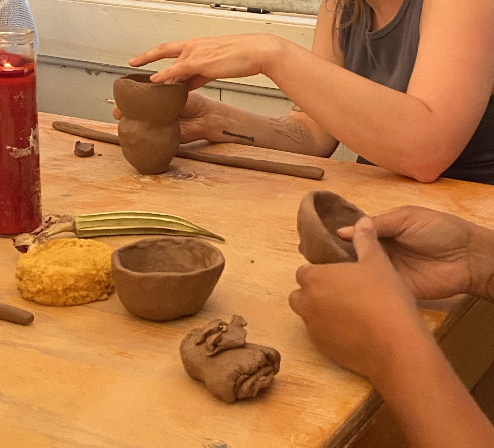
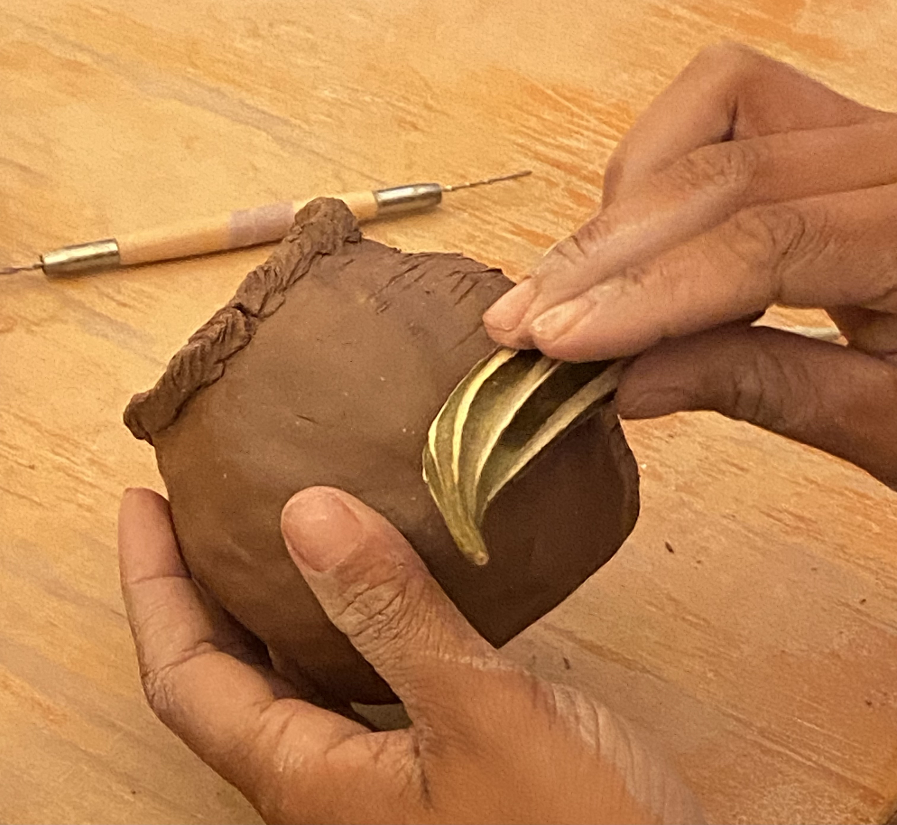
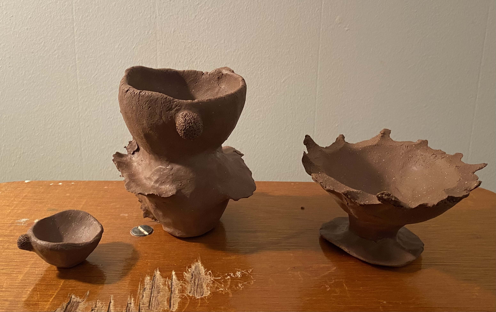

Click here to register for their current workshop offerings.
Below are photos of past student work and material research.
Experimentation in various media, particularly natural elements and found objects through printmaking, painting, papermaking, and natural dyeing methods. This class is centered in re-use and getting to know your surroundings as research.
The following photos are of student work and processes:
- Leslie Drennan's pH shifted printmaking and stamping experiments.
Students worked with plant-based inks (gin-based using matcha, turmeric, paprika) made by Becca.
- Paper pulp and paper made by Denna Warrayat
- Natural dye pH shift guide made by Saja Khader


***
***
***
*u**f*o*u*n*d**
s*e*c*r*e*t****m*s*g*:*]**
***
***
***
*u**f*o*u*n*d**
s*e*c*r*e*t****m*s*g*:*]**



Below work of Daria, Erin, and Faith. July 2024.


